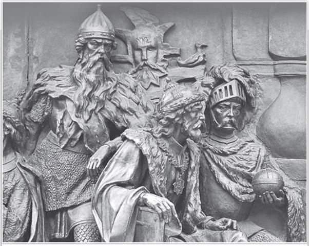
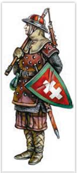
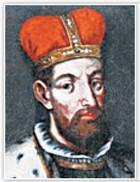
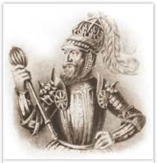
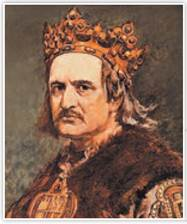
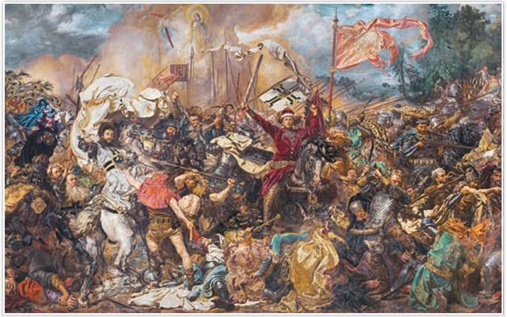
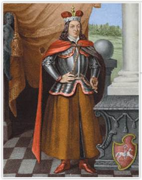

Гедимин, Ольгерд, Витовт на памятнике «Тысячелетие России». Автор проекта М. Микешин. Великий Новгород
Присутствие на памятнике литовских князей не случайно. Таким образом автор подчеркнул принадлежность Великого княжества Литовского к русской истории.
РОССИЯ
МИР
1. Судьба западнорусских земель после монгольского нашествия. Русские люди испытывали перед ордынцами великий страх и скрытую злобу к ним. Впрочем, это переплеталось с трактовкой власти Орды как Господнего наказания, которое нужно стойко сносить. «Бог не татар любит, а нас за грехи татарами наказывает» — эта мысль звучала в поучительных речах священнослужителей. Орда не пыталась навязать Руси свою веру. Более того, до объявления ханом Узбеком в 1313 г. ислама государственной религией на территории Орды действовало православное епископство. В представлении Русской православной церкви наибольшую угрозу Руси несли «римляне» (ливонские крестоносцы, шведы). Они не только напирали на северо-западные рубежи русских земель, но и желали проповедовать католичество.
По мере восстановления хозяйства наметился процесс объединения русских земель, без чего невозможно было сбросить ордынское владычество. Путь к единству был непрост, князья — инициаторы единения жестоко враждовали друг с другом. С начала XIV в. Москва и Тверь боролись за право стать центром собирания русских земель Северо-Восточной Руси.
Земли Западной и Южной Руси со второй половины XIII в. оказались под властью Великого княжества Литовского. Большую его часть составляли западнорусские земли и православное западнорусское население. Летописание в Великом княжестве Литовском велось на русском языке, а судили по законам Русской Правды. Не случайно тамошний монарх всегда носил титул великого князя литовского и русского.
Основатель Литовского княжества Миндовг вначале был изгнан из литовских земель. Только когда его приняли в западнорусском городе Новогрудке, он сумел покорить литовские племена. Его преемники всегда опирались на помощь Полоцкой Руси. С Новгородом у Литовского княжества были враждебные отношения. Новгородцы смотрели на литовцев как на своих данников. В начале XIII в. Новгород стал подвергаться набегам литовских отрядов. Воевало Великое княжество Литовское и с князьями Северо-Восточной Руси.

Литовский воин
ТОЧКА ЗРЕНИЯ
Из книги историка М. Бычковой
«Русское государство и Великое княжество Литовское»
Языческая Литва оказалась между католическим (Орден, Польша, германские княжества) и православным (русские княжества) миром; на её историю оказывали влияние традиции этих миров, и она сама влияла на них.
Александр Невский, будучи новгородским князем, тоже воевал с литовцами. Но в середине XIII в., став великим князем владимирским, он заключил союз с Миндовгом против Ливонского ордена.
2. Великое княжество Литовское при Гедимине. Почвой для объединения литовских племён (литвы, жемайтов, аукштайтов, ятвягов) и Западной Руси стала общая беда: натиск внешних врагов. Литве угрожали рыцари-крестоносцы. На Полоцкую землю нападали и крестоносцы, и ордынцы.
В 1263 г. Миндовг погиб в результате заговора. Его преемники с трудом поддерживали единство княжества. Правда, одному из них в союзе с Галицко-Волынской землёй удалось одержать ряд побед над Ливонским орденом.
В начале XIV в. единоличным правителем Великого княжества Литовского стал Гедимйн (1316—1341). Под его властью оказались многие земли Западной Руси: Полоцкая, Витебская, Минская и др.

Великий князь Гедимин
В борьбе за власть Гедимин опирался на западнорусские города. Полоцк, Брянск, Витебск, Минск, Туров, Новогрудок вошли в державу Гедимина на основе договоров. Местные князья Рюриковичи заключали династические союзы своих дочерей с сыновьями Гедимина. Гедимин придерживался древней веры своих предков. Но его сыновья, женившись на русских княжнах, принимали православие. Подавляющее большинство населения Литовского государства исповедовало православие.
При Гедимине сложился особый федеративный строй Литовского княжества. Это означало, что оно состояло из нескольких территорий и городов, которые признавали великого князя, но имели определённую самостоятельность, сохраняли самобытность. Власть великого князя была ограничена местными князьями и сеймом (советом), куда входили литовская и западнорусская знать (магнаты). К началу XIV в. влиятельным сословием стала шляхта (профессиональные воины-землевладельцы). Столицей княжества был город Вильно (современный Вильнюс), однако самым крупным городом оставался Полоцк. Постепенно во всех литовских и западнорусских городах власть оказалась в руках родственников Гедимина. Даже на Волыни, не входившей в Литовское княжество, правил сын Гедимина. Так сложилась великокняжеская династия Гедиминовичей.
3. Литовско-русское государство при Ольгерде. Расцвет Великого княжества Литовского пришёлся на правление сыновей Гедимина. Великим князем литовским и русским стал старший сын Гедимина Ольгерд (1345—1377). Его фактическим соправителем был брат Кейстут. Ольгерд решал проблемы западнорусских земель, воевал с монголами, помогал Твери бороться с Москвой. Ему удалось в два раза увеличить территорию Великого княжества Литовского. Кейстут сражался с крестоносцами.
В Южной Руси вместо Рюриковичей стали править Гедиминовичи. С южнорусских земель они продолжали платить дань Орде.
Южные и западные русские земли опережали Литовское княжество в экономическом развитии. В Литве по-прежнему сохранялось две веры — многобожие и православие. Ольгерд продолжал верить древним богам, но объявил, что готовится принять христианство. Его жёны — витебская княжна Мария и вторая жена тверская княжна Иулиания — и дети от первого брака, в том числе сыновья Андрей и Дмитрий, были православными.

Князь Ольгерд. Гравюра
Перед смертью Ольгерд принял крещение и монашеский постриг с именем Александр. Его наследником был объявлен один из младших сыновей Ягайло. Между Ягайло и его дядей Кейстутом началось соперничество. Дядя пытался убить племянника, но Ягайло заманил Кейстута в Кревский замок на переговоры, где Кейстут и погиб (1382). Достойным соперником Ягайло оказался его двоюродный брат Вйтовт.
4. Уния Литовского княжества и Королевства Польского. Государственное устройство Великого княжества Литовского — ограниченная власть монарха, самоуправление городов (Магдебургское право), безусловная частная собственность магнатов и шляхты на землю — было не похоже на княжескую власть и устройство общества в Северо-Восточной Руси. Здесь ещё в домонгольские времена великий князь воспринимался как верховный собственник всех земель и прочих ресурсов своего княжества-вотчины. Во времена ордынской зависимости такой порядок сохранялся.
Московское и Литовское княжества становились соперниками в борьбе за Русь, и с годами их противостояние только усилилось. В 1380 г. в преддверии важнейшей битвы русских князей с ордынцами Ягайло решил стать союзником Орды, правда, к сражению он «не успел», а его старшие братья — брянский князь Дмитрий и полоцкий князь Андрей — сражались против ордынцев.
Борьба с крестоносцами сблизила Великое княжество Литовское с Королевством Польским, воевавшим с Тевтонским орденом. После смерти польского короля знать решила выдать его дочь юную Ядвигу за великого князя Литвы. В 1385 г. в замке Крево была заключена личная уния (союз). По условиям Кревской унии Ягайло принял католичество, женился на Ядвиге и стал польским королём под именем Владислава II. Обе страны сохраняли независимость, объединённые только монархом. Началось крещение язычников по католическому обряду и ограничение прав православного населения Великого княжества Литовского.

Владислав Ягайло. Художник Я. Матейко
Некоторые исследователи предполагают, что имя Ягайло происходит от литовских слов «йоти» — «ехать верхом» и «гайлас» — «сильный».
Любопытные детали. Правители Литвы охотно заключали династические союзы с русскими князьями. Гедимин выдал свою дочь Айгусту за сына Ивана Калиты Симеона Гордого. Ольгерд был женат на дочери тверского князя Юлиании. У Ольгерда было множество дочерей, он приобрёл в качестве родственников сразу нескольких Рюриковичей. Витовт выдал дочь Софью за сына Дмитрия Донского Василия.
Польское католическое влияние, нараставшее ограничение прав православного большинства, усиление военно-политической мощи Москвы стали причинами постепенной утраты Литвой роли центра притяжения русских земель.
5. Великий князь Витовт. При жизни Витовта православная литовско-русская знать, недовольная унией с католической Польшей, требовала от Ягайло-Владислава признания Витовта самостоятельным великим князем. Ягайло вынужден был согласиться с этим требованием. В 1392 г. Витовт стал великим князем литовским и русским, но признал себя вассалом Ягайло.
За счёт брака своей дочери Софьи с великим князем московским Василием I Витовт пытался распространить своё влияние на Северо-Восточную Русь. Также он помогал изгнанному из Орды хану Тохтамышу вернуть сарайский трон, чтобы затем получить ярлык на русские земли, подвластные Орде. Но в битве с ордынскими войсками на реке Ворскле (1399) он был разбит и ярлыка не получил. В 1404 г. Витовту удалось завоевать Смоленское княжество.

Грюнвальдская битва. Художник Я. Матейко. 1878 г.
15 июля мы отмечаем памятную дату военной истории Отечества — Грюнвальдскую битву. Она положила конец продвижению крестоносцев на восток.

Портрет великого князя Витовта. Литография раскрашенная
Многие историки считают, что решающую роль в разгроме Тевтонского ордена в Грюнвальдской битве сыграла тяжеловооружённая смоленская, полоцкая и брянская пехота армии Витовта.
В начале XV в. Великое княжество Литовское и Польша вели войну с Тевтонским орденом. Победа над рыцарями была одержана в сражении у деревни Грюнвальд 15 июля 1410 г. От крушения Тевтонского ордена выиграло не Литовское княжество, а Королевство Польское. Витовт пытался усилить свои позиции, добиваясь объявления себя королём литовским и русским. В 1430 г. римский король (избранный глава Священной Римской империи) послал Витовту корону, которую перехватили поляки. После смерти Витовта (1430) Великое княжество Литовское стремительно теряло своё политическое влияние. Москва стала главным претендентом на роль лидера в объединении русских земель.
ПОДВЕДЁМ ИТОГИ
Литовское государство сложилось в XIII в. в процессе борьбы с крестоносцами. В дальнейшем оно росло за счёт присоединения к нему русских земель. В XIV в. литовским князьям Гедиминовичам удалось создать одну из крупнейших европейских держав, в которой подавляющее большинство составляло православное русское население. Однако отказ правителей Литвы от православия и уния с католической Польшей постепенно привели к потере политической, религиозной и культурной независимости Великого княжества Литовского. В это же время продолжалось возвышение Московского княжества, стремившегося объединить все русские земли.
Вопросы и задания
Работаем с хронологией
Расположите в хронологической последовательности события:
Работаем с источником
Прочитайте отрывок из работы М. Крома «Рождение государства. Московская Русь XV—XVI веков» и ответьте на вопросы.
Сильнейшей державой Восточной Европы... было Великое княжество Литовское. Встречающееся в нашей литературе утверждение, будто оно играло роль альтернативного [одного из двух наряду с Москвой] центра... объединения русских земель, не соответствует действительности. Литовские князья никогда не ставили перед собой такой задачи («объединение» не стоит путать с широкой экспансией, которую они вели на восточнославянских землях начиная с XIII в.).
...Но, каковы бы ни были успехи литовских князей, они не могли претендовать на роль объединителей русских земель — уже хотя бы потому, что в 1386 г., после унии Литвы с Польшей, приняли католичество. Сосуществование в великом княжестве многочисленного православного населения с католической правящей элитой таило в себе угрозу раскола страны...
Работаем с понятиями
Кто такие магнаты? С представителями какого уже известного вам общественного слоя их можно сравнить? Почему?
ДОПОЛНИТЕЛЬНЫЕ МАТЕРИАЛЫ
«УЧИТЕЛЮ И УЧЕНИКУ».
Материалы к параграфу на портале «История.РФ».